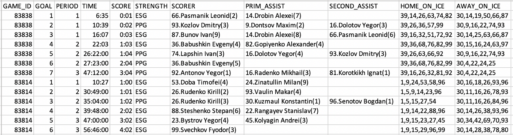

Scraping junior hockey data from HTML pages using Python
By Dave MacPherson | Posted Oct 11, 2019
This past July, I launched Pick224, a hockey analytics website containing data from over 15 hockey leagues across the world with a focus on junior hockey. Since the launch, the most common question I’ve been asked on Twitter has been “where do you get all this data from?”. I then explain how I scrape all the individual game summaries of each league, clean the data, total up all the stats, and join the results with player biographical information.
This usually scares people off.
I get it. Data collection, data cleaning, and data compilation can be daunting tasks. It’s hard to know where to start or what tools to use.
My advice? Do something. Do a shitty job at it. Then, as you slowly begin to better understand your data and your needs, make small improvements. Eventually, you’ll have a great grasp of your data and some decent code.
In this article, I’ll help you get started by recommending some tools and walking you through creating a basic web scraper.
The code that follows is likely very inefficient, but should provide a good foundation.
Technical requirements
To write our code, we’ll need the Python programming language and two extra libraries. I always fumble my way through installing programming languages, but the linked guides here should be pretty helpful:
• Python3
• BeautifulSoup (pip install bs4)
• Requests (pip install requests)
Understanding the data
Before we start writing code, we need to know what data is available and what parts we need.
For this example, let’s scrape the MHL, Russia’s junior hockey league.
We can get everything we need from the individual game reports, an example of which can be found here: https://engmhl.khl.ru/game/857/83814/summary/
We want to extract:
• Each individual goal and all its details from the “Scoring summary” tab; and
• Select information from each row of the “Players summary” tab
If you open the URL above in Google Chrome, you can right-click on any part of the page and click “Inspect” to view the source code for that part of the webpage. If you highlight a section of code, it will highlight the relevant component of the webpage:

For example, if you highlight the code until the whole “Scoring summary” table is highlighted, you’ll see that the scoring summary is included in a “table” with the “class” protocol-table. If we search the rest of the code using ctrl+f (cmd+f on Macs) for “<table”, we can see that there are 12 tables in the file. In order, these tables contain:
1. The scoring summary
2. The penalty summary
3. The home team’s goalies
4. The home team’s defensemen
5. The home team’s forwards
6. The away team’s goalies
7. The away team’s defensemen
8. The away team’s forwards
9. Team powerplay summaries
10. Team goals for summaries
11. Team goals against summaries
12. Team shot summaries
To get what we want, we need to pull data from tables 1, 4, 5, 7, and 8.
Further exploring our data, we can see that each individual row is enclosed in a “tr” tag and the individual cells of each row are enclosed in “td” tags. We’ll need a way to grab all the information from each of these cells.
Writing the code
To get started, open up your Python programming interface. Python comes with one called IDLE, but there are lots of more customizable ones available. I use Wing because it’s what we used in the computer science program I made it 30% through ¯\_(ツ)_/¯.
If using IDLE, click File -> New File to open a blank file. Click File -> Save As and save it as mhlscrape.py
The first thing we need to do is import the necessary Python libraries. To do this, enter the three import lines seen in the below code snippet:
We’ll then save the URL of the webpage we want data from in a creatively-named variable, ‘url’. In a second variable called ‘response’, we use the requests library to request the relevant data from the webserver. Then, we use the BeautifulSoup library to extract all the source code in a readable format. The result of these three lines is that our ‘soup’ variable will contain the webpage’s entire source code:
Next, we’ll extract the table we identified above as having the data we want. Most programming languages are silly and start with an index of zero, so our first table, the scoring summary, will be table zero. The find_all function finds all the tables and the [0] at the end grabs only the first table. We can then use find_all on this table to pull each row.
To store all the text from each cell, we create a blank list named ‘scoringplays’.
Each row of the scoring summary has 10 columns. These would be numbered 0 to 9. We can use a “for” loop to iterate through each row and add each cell’s text to a list.
for i in range(1, len(scorerows)):
Any indented code following the colon will run for every row from row 1 to the last row. This intentionally skips the header row, row zero.
To add each row’s contents to the list, we use append. This code would add the first cell of each row’s text to the ‘scoringplays’ list:
scoringplays.append([scorerows[i].select(‘tr > td’)[0].get_text(strip=True)])
Since we want every cell, we’d expand this code to grab all 10 columns. You could exclude specific columns if you don’t need their data.
We now have all our data stored in the ‘scoringplays’ list. The last step is writing this data to a file, which we can do using the following code:
Putting all the code together, we have the following:
To summarize, this code pulls all of the individual goals from the webpage’s scoring summary and writes the data to a CSV file.
To run the code in IDLE, click Run -> Run Module. Open the resulting CSV file and take a look.
Improving the code
Once we have the basic code working, here are some improvements we can make:
• Using the same concepts as above, pull the player data and write that data to a separate file
• Write a descriptive header to each file
• Add the game number to the output
• Enclose the code in a loop to pull multiple games each time you run the code (note: If doing this, make sure to add a timed break between attempts so you don’t overload the website’s server)
After these changes, here’s how the data shows up in our CSV file:

As you run the code for more games, you’ll notice other changes you need to make. For example, a game that went to a shootout has 13 tables instead of 12, and the shootout summary shows up in between the scoring summary and the player summaries, so you’ll need to account for that in your code.
My current code for scraping the MHL is below:
After collecting the data, you’ll need to clean it up before you can get into any analysis. I’ll dive into some accessible methods for doing this in a future article.
I hope this helps start you off with web scraping. If you have any questions, my DMs are open on Twitter.
If web scraping isn’t for you and you’d rather jump right into data analysis, feel free to download any of the data available on Pick224. If you do something cool with the data, please let me know!